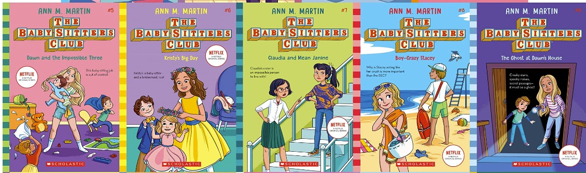
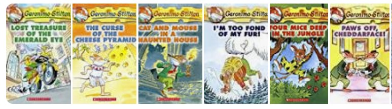
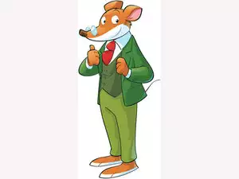
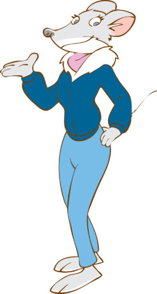
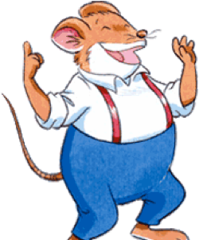

A funny boy who hates school and Andrea. A girl who think she knows everything.
a Club with 4 Baby-Sitters.
A book about a funny mouse who is clumsy.
| Named | Portrait | Description | Male/female |
|---|---|---|---|
| Geronimo |  | He is the main character. He is clumsy. He works for the newspaper at the NewMouse Gazette. | Male |
| Thea |  | She is the sister of Geronimo. She is not always present in every book. She is laughing when Geronimo is clumpsy. | Female |
| Trap |  | He is a clumpsy cousin of Geronimo. He runs a store called Junk-for-Less. | Male |